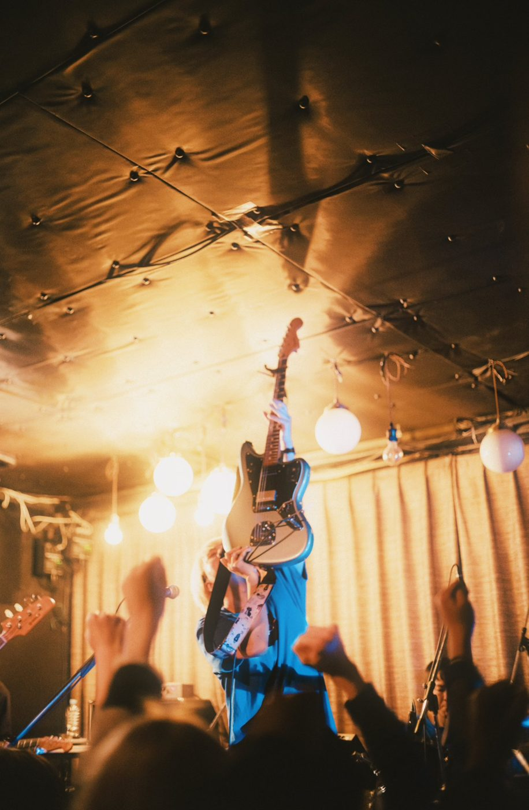
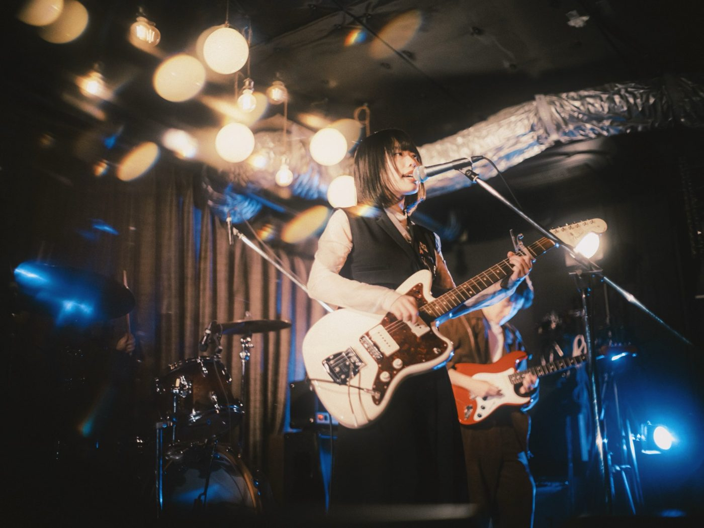
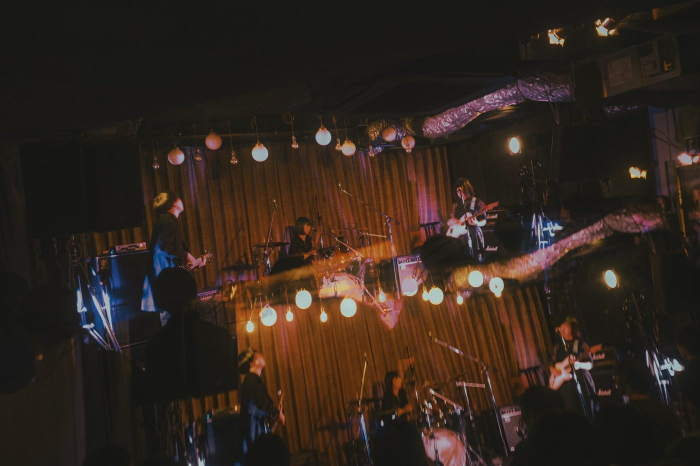

archive
冬至に沈む vol.2 2024年 開催アーカイブ

冬至に沈む vol.2
- 日時
- 2024年12月21日(土)
- 会場
- 下北沢 近道
- 出演
- 透明受胎 / arti / Kastori /キンヨウノヨル / とがる
- 協力
- フライヤーデザイン / 住田悠真
オフィシャルカメラ / 麗



最新情報はSNSでお知らせしています
archive



最新情報はSNSでお知らせしています